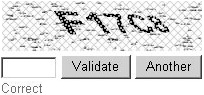
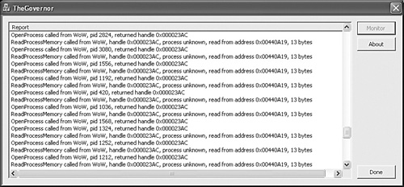

{% include JB/setup %}
{% raw %}
<div>
<a name="toppage" class="pcalibre calibre1"></a><table width="100%" border="0" cellspacing="0" cellpadding="0" class="sfbody"><tr valign="top" class="calibre2"><td class="calibre3"><a name="MainContent" class="pcalibre calibre1"></a><table width="95%" class="sfbody"><tr class="calibre2"><td class="pcalibre1 v"><!--Copyright (c) 2002 Safari Tech Books Online--><table width="100%" border="0" cellspacing="0" cellpadding="2" class="calibre4"><tr class="calibre2"><td valign="middle" class="v1 pcalibre1" height="5"></td></tr><tr class="calibre2"><td valign="middle" class="v1 pcalibre1"><table cellpadding="0" cellspacing="0" border="0" width="100%" class="calibre4"><tr class="calibre2"><td class="calibre6"><span class="calibre7"> </span>
                   
                  <span class="calibre7">   </span>
             <span class="calibre7"> </span></td></tr></table></td><td class="calibre8"/><td valign="middle" class="v2 pcalibre1"> 
           
          <span class="calibre7"><a target="_self" href="ch02lev1sec6.html" title="Previous section" class="pcalibre calibre1"></a></span>
				
				 
				
				<span class="calibre7"><a target="_self" href="ch03.html" title="Next section" class="pcalibre calibre1"></a></span></td></tr></table><div id="section" class="calibre15"><table width="100%" border="0" cellspacing="0" cellpadding="0" class="calibre4"><tr class="calibre2"><td valign="top" class="calibre8"><a href="10061538.html" class="pcalibre calibre1"></a>Security Game Programming Networking Programming Greg Hoglund Gary McGraw Addison Wesley Professional Exploiting Online Games: Cheating Massively Distributed Systems<a name="ch02lev1sec7" class="pcalibre calibre1"></a>
<h3 id="title-IDAMLE5C" class="docSection1Title">Countermeasures</h3>
<p class="docText">For obvious reasons, gaming companies are most interested in keeping bots out of games. Scientists have even begun to study the problem and publish work about it. For example, the paper "Preventing Bots from Playing <a name="iddle1127" class="pcalibre calibre1"></a><a name="iddle1135" class="pcalibre calibre1"></a><a name="iddle1140" class="pcalibre calibre1"></a><a name="iddle1168" class="pcalibre calibre1"></a><a name="iddle1173" class="pcalibre calibre1"></a><a name="iddle1249" class="pcalibre calibre1"></a><a name="iddle1328" class="pcalibre calibre1"></a><a name="iddle1329" class="pcalibre calibre1"></a><a name="iddle1330" class="pcalibre calibre1"></a><a name="iddle1338" class="pcalibre calibre1"></a><a name="iddle1343" class="pcalibre calibre1"></a><a name="iddle1392" class="pcalibre calibre1"></a><a name="iddle1421" class="pcalibre calibre1"></a><a name="iddle1580" class="pcalibre calibre1"></a><a name="iddle1879" class="pcalibre calibre1"></a><a name="iddle2025" class="pcalibre calibre1"></a><a name="iddle2108" class="pcalibre calibre1"></a><a name="iddle2187" class="pcalibre calibre1"></a>Online Games" by Philippe Golle and Nicolas Ducheneaut appears in <span class="docEmphasis">ACM Computers in Entertainment</span>.<sup class="docFootnote"><a class="pcalibre6 pcalibre5 calibre1" href="#ch02fn17">[17]</a></sup></p><blockquote class="calibre24"><p class="docFootnote1"><sup class="calibre31"><a name="ch02fn17" class="pcalibre calibre1">[17]</a></sup> The paper is also available from the PARC Web site at &lt;<a class="pcalibre6 pcalibre5 calibre1" target="_blank" href="http://www.parc.xerox.com/research/publications/files/5445.pdf">http://www.parc.xerox.com/research/publications/files/5445.pdf</a>&gt;.</p></blockquote>
<p class="docText">One clever idea suggested for ensuring that humans (rather than bots) are playing games has been used successfully to combat spam. It's called a reverse Turing test. The Turing test is a test from the AI field meant to determine whether the entity at one end of a conversation is a human. A reverse Turing test works by asking questions to ensure that the answering target (in this case, a gamer) is a human. In many cases, this involves displaying a convoluted picture that only a human can properly decode (<a class="pcalibre6 pcalibre5 calibre1" href="#ch02fig06">Figure 2-6</a>). This technique is often referred to as <span class="docEmphasis">captcha</span>, short for Completely Automated Public Turing Test to Tell Computers and Humans Apart.</p>
<a name="ch02fig06" class="pcalibre calibre1"></a><p class="calibre28"><center class="calibre29">
<h5 class="docFigureTitle">Figure 2-6. A classic reverse Turing test based on human perception. (From &lt;<a class="pcalibre6 pcalibre5 calibre1" target="_blank" href="http://www.brianpautsch.com/Blog/2005/12/1/Captcha">http://www.brianpautsch.com/Blog/2005/12/1/Captcha</a>&gt;; used by permission.)</h5>
</center></p><p class="docText">
</p>
<br class="calibre15"/>
<p class="docText">Often, gamers self-police and try to ferret out and expose bots among themselves. This can happen through the invocation of a game's chat function (something that game masters also employ as a tactic to find bots). The chat countermeasure works in many games, from MMORPGs to online poker. Poker bots are not very good at small talk!</p>
<p class="docText">Monitoring in real time (possibly using chat) is often accompanied by monitoring history as well. Looking for behavior that is nonhuman in nature—maybe superhuman aim, or maybe obsessive behavior such as killing monsters over and over in the same spot—is often a tip-off that a bot may be involved. Game masters make use of history to uncover cheating as a standard tactic.</p>
<a name="ch02lev2sec14" class="pcalibre calibre1"></a>
<h4 id="title-IDAVSE5C" class="docSection2Title">Spyware</h4>
<p class="docText"><a name="iddle1134" class="pcalibre calibre1"></a><a name="iddle1136" class="pcalibre calibre1"></a><a name="iddle1337" class="pcalibre calibre1"></a><a name="iddle1339" class="pcalibre calibre1"></a><a name="iddle1488" class="pcalibre calibre1"></a><a name="iddle1910" class="pcalibre calibre1"></a><a name="iddle2092" class="pcalibre calibre1"></a>Anticheat tools have been around almost as long as game servers have. Public outcry on open servers led to the first such tools. Game companies running private servers carry on the tradition to this day.</p>
<p class="docText">The first service devoted to this is called PunkBuster, run by a Texas company named Even Balance, Inc. The PunkBuster service started in 2000. The first versions relied on simple techniques such as variable checking and process validation authorized through a server. This was followed by a number of server-based checks. Today, PunkBuster is integrated into a number of online games.</p>
<p class="docText">The PunkBuster Web site lists the following "features" of the product.<sup class="docFootnote"><a class="pcalibre6 pcalibre5 calibre1" href="#ch02fn18">[18]</a></sup></p><blockquote class="calibre24"><p class="docFootnote1"><sup class="calibre31"><a name="ch02fn18" class="pcalibre calibre1">[18]</a></sup> Quoted from the PunkBuster Web site at &lt;<a class="pcalibre6 pcalibre5 calibre1" target="_blank" href="http://www.evenbalance.com/index.php?page=info.php">http://www.evenbalance.com/index.php?page=info.php</a>&gt;.</p></blockquote>
<a name="ch02pro02" class="pcalibre calibre1"></a><ul class="calibre18" start=""><li class="calibre19">Real-time scanning of memory by PB Client on players' computers searching for known hacks/cheats<br class="calibre15"/><br class="calibre15"/></li><li class="calibre19">Throttled two-tiered background auto-update system using multiple Internet Master Servers to provide end-user security ensuring that no false or corrupted updates can be installed on players' computers<br class="calibre15"/><br class="calibre15"/></li><li class="calibre19">Frequent status reports (highly encrypted) are sent to the PB Server by all players and the PB Server raises a violation when necessary which causes the offending player to be removed from the game and all other players are informed of the violation<br class="calibre15"/><br class="calibre15"/></li><li class="calibre19">PB Admins can also manually remove players from the game for a specified number of minutes or permanently ban if desired<br class="calibre15"/><br class="calibre15"/></li><li class="calibre19">PB Servers can optionally be configured to randomly check player settings looking for known exploits of the game engine<br class="calibre15"/><br class="calibre15"/></li><li class="calibre19">PB Admins can request actual screenshot samples from specific players and/or can configure the PB Server to randomly grab screenshot samples from players during gameplay<br class="calibre15"/><br class="calibre15"/></li><li class="calibre19">An optional "bad name" facility is provided so that PB Admins can prevent players from using offensive player names containing unwanted profanity or racial slurs<br class="calibre15"/><br class="calibre15"/></li><li class="calibre19">Search functions are provided for PB Admins who wish to search player's keybindings and scripts for anything that may be known to exploit the game<br class="calibre15"/><br class="calibre15"/></li><li class="calibre19"><a name="iddle1069" class="pcalibre calibre1"></a><a name="iddle1075" class="pcalibre calibre1"></a><a name="iddle1080" class="pcalibre calibre1"></a><a name="iddle1131" class="pcalibre calibre1"></a><a name="iddle1141" class="pcalibre calibre1"></a><a name="iddle1334" class="pcalibre calibre1"></a><a name="iddle1344" class="pcalibre calibre1"></a><a name="iddle1881" class="pcalibre calibre1"></a><a name="iddle1884" class="pcalibre calibre1"></a><a name="iddle1889" class="pcalibre calibre1"></a><a name="iddle2290" class="pcalibre calibre1"></a><a name="iddle2310" class="pcalibre calibre1"></a><a name="iddle2315" class="pcalibre calibre1"></a>The PunkBuster Player Power facility can be configured to allow players to self-administer game servers when the Server Administrator is not present entirely without the need for passwords<br class="calibre15"/><br class="calibre15"/></li><li class="calibre19">PB Servers have an optional built-in mini http web server interface that allows the game server to be remotely administered via a web browser from anywhere over the Internet<br class="calibre15"/><br class="calibre15"/></li></ul>
<p class="docText">Note that some of these features are extremely invasive, such as the one that scans client PCs! This kind of scanning often involves the installation of spyware on a gamer's PC.</p>
<p class="docText">PunkBuster was originally conceived as a way to stop client-side hacks in Counter-Strike. But today PunkBuster concentrates on helping to protect and police other games.</p>
<p class="docText">As it turns out, PunkBuster was a harbinger of invasive techniques to come.</p>
<a name="ch02lev2sec15" class="pcalibre calibre1"></a>
<h4 id="title-IDA20E5C" class="docSection2Title">The Warden: Defeating Cheaters by Crossing the Line</h4>
<p class="docText">Today, WoW has a two-pronged strategy to defeat cheaters. The first approach is to make rules against cheating and ban those characters caught cheating. This is carried out by publishing the terms of use, which are administered according to the legally binding EULA. Nothing is wrong with that.<sup class="docFootnote"><a class="pcalibre6 pcalibre5 calibre1" href="#ch02fn19">[19]</a></sup> (For more on the legal situation, see <a class="pcalibre6 pcalibre5 calibre1" href="ch04.html#ch04">Chapter 4</a>.) The second approach is to keep an eye on every PC running the WoW client and try to determine whether it is being used to cheat. This spying thing is a problem.</p><blockquote class="calibre24"><p class="docFootnote1"><sup class="calibre31"><a name="ch02fn19" class="pcalibre calibre1">[19]</a></sup> Note that this is not a law, it is a contract, and there is no due process. Game companies can ban your character at any time.</p></blockquote>
<p class="docText">If monitoring someone's PC sounds like spying to you, that's because it is. WoW's embedded Warden reads all sorts of data from the gamer's PC. Hoglund's Warden discovery in fall 2005 set off a controversy over privacy, security, and just what lengths security measures should go to in order to stop cheating. And it's part of the reason that we decided to write <span class="docEmphasis">Exploiting Online Games</span>.</p>
<p class="docText">Besides monitoring the WoW process space and keeping track of DLLs running in that space, the Warden pokes around into other processes, doing things like reading the window text in the title bar of <span class="docEmphasis">every window</span> and doing a scan of the code loaded for <span class="docEmphasis">every process running</span> on your computer (which it then compares against known cheat code). Blizzard claims not to <a name="iddle1437" class="pcalibre calibre1"></a>have any designs to use the data it digs up for purposes other than security, but nothing is really stopping the company from doing whatever it wants on a gamer's PC, and it has already crossed the invisible line by poking around outside the game's process area. We don't trust them.</p>
<p class="docText">This is a clear invasion of privacy. So much so that the Electronic Frontier Foundation (EFF) has even weighed in with an opinion &lt;<a class="pcalibre6 pcalibre5 calibre1" target="_blank" href="http://www.eff.org/deeplinks/archives/004076.php">http://www.eff.org/deeplinks/archives/004076.php</a>&gt;. Though the EULA does call out that Blizzard may monitor PC activities with the Warden (without specifying what the Warden actually does), this information is buried in the small print that almost nobody ever reads. In informal conversations with WoW players, we have found that none of them were aware that they had agreed to such monitoring. Some of them were concerned enough to stop playing.</p>
<p class="docText">Worldwide, 8 million people play WoW (usually about 500,000 at any one time). And <span class="docEmphasis">every single one</span> of these players has granted Blizzard the right to scan their computer programs and memory—which Blizzard does.</p>
<p class="docText">The Warden process scans for an arbitrary list of things such as open processes, URLs, and so on, controlled at Blizzard's discretion, and mails the information it finds back to Blizzard any time the game program is running. <a class="pcalibre6 pcalibre5 calibre1" href="#ch02fig07">Figure 2-7</a> shows an example of content being sent back to Blizzard by the Warden as determined by a program we wrote called the <a name="iddle1128" class="pcalibre calibre1"></a><a name="iddle1331" class="pcalibre calibre1"></a><a name="iddle1581" class="pcalibre calibre1"></a>Governor. You can think of the Warden as 8 million copies of what the game companies call "legitimate spyware." We think the term <span class="docEmphasis">spyware</span> is apt without a modifier.</p>
<a name="ch02fig07" class="pcalibre calibre1"></a><p class="calibre28"><center class="calibre29">
<h5 class="docFigureTitle">Figure 2-7. The Governor program, which we created, reports on the activities of the WoW Warden. The Warden acts as a spy for Blizzard and keeps an eye on your PC by calling into open processes and reading memory to see what it finds, then reporting that information back to Blizzard for analysis.</h5>
</center></p><p class="docText"><div class="v8 pcalibre3 pcalibre2"><a target="_blank" href="fig02-07_alt.jpg" class="pcalibre calibre20">[View full size image]</a></div></p>
<br class="calibre15"/>
<p class="docText">Of course, Blizzard isn't the only company that does monitoring like this—many other game companies do it, too. Sony even tried to install a monitor when music CDs were inserted into a PC but did it so poorly that the company landed in hot water. Reaction to the unmasking of programs like the WoW Warden and Sony's rootkit has been intense.</p>
<p class="docText">The Black Hat Corner reprints a blog entry outing the Warden as spyware. This story spread worldwide.</p>
<a name="ch02sb04" class="pcalibre calibre1"></a><p class="calibre28"><table cellspacing="0" width="90%" border="1" cellpadding="5" class="calibre4"><tr class="calibre2"><td class="calibre8"><a name="ch02sb04__supertitle" class="pcalibre calibre1"></a>
<h2 class="docSidebarTitle">Black Hat Corner: WoW Warden as Spyware</h2>
<p class="docText">In the fall of 2005, one of us (Hoglund) discovered the WoW Warden and outed it to the technical community. Hoglund's original posting to the rootkit.com blog (available at &lt;<a class="pcalibre6 pcalibre5 calibre1" target="_blank" href="http://www.rootkit.com/blog.php?newsid=358">http://www.rootkit.com/blog.php?newsid=358</a>&gt; with follow-up threads and discussion) touched off a firestorm. Here's the post.</p>
<blockquote class="calibre24">
<p class="docText"><span class="calibre11">4.5 million copies of EULA-compliant spyware</span></p>
<p class="docText">Oct 05 2005, 19:07 (UTC+0)</p>
</blockquote>
<p class="docText">Hoglund writes:</p>
<p class="docText">I recently performed a rather long reversing session on a piece of software written by Blizzard Entertainment, yes—the ones who made Warcraft, and World of Warcraft (which has 4.5 million+ players now, apparently). This software is known as the 'warden client'—it's written like shellcode in that it's position independent. It is downloaded on the fly from Blizzard's servers, and it runs about every 15 seconds. It is one of the most interesting pieces of spyware to date, because it is designed only to verify compliance with a EULA/TOS. Here is what it does, about every 15 seconds, to about 4.5 million people (500,000 of which are logged on at any given time):</p>
<p class="docText">The warden dumps all the DLL's using a ToolHelp API call. It reads information from every DLL loaded in the 'world of warcraft' executable process space. No big deal.</p>
<p class="docText"><a name="iddle1070" class="pcalibre calibre1"></a><a name="iddle1076" class="pcalibre calibre1"></a><a name="iddle1081" class="pcalibre calibre1"></a><a name="iddle1132" class="pcalibre calibre1"></a><a name="iddle1137" class="pcalibre calibre1"></a><a name="iddle1142" class="pcalibre calibre1"></a><a name="iddle1335" class="pcalibre calibre1"></a><a name="iddle1340" class="pcalibre calibre1"></a><a name="iddle1345" class="pcalibre calibre1"></a><a name="iddle1882" class="pcalibre calibre1"></a><a name="iddle1885" class="pcalibre calibre1"></a><a name="iddle1890" class="pcalibre calibre1"></a><a name="iddle2093" class="pcalibre calibre1"></a><a name="iddle2292" class="pcalibre calibre1"></a><a name="iddle2311" class="pcalibre calibre1"></a><a name="iddle2316" class="pcalibre calibre1"></a>The warden then uses the GetWindowTextA function to read the window text in the titlebar of every window. These are windows that are not in the WoW process, but any program running on your computer. Now a Big Deal.</p>
<p class="docText">I watched the warden sniff down the email addresses of people I was communicating with on MSN, the URL of several websites that I had open at the time, and the names of all my running programs, including those that were minimized or in the toolbar. These strings can easily contain social security numbers or credit card numbers, for example, if I have Microsoft Excel or Quickbooks open w/ my personal finances at the time.</p>
<p class="docText">Once these strings are obtained, they are passed through a hashing function and compared against a list of 'banning hashes'—if you match something in their list, I suspect you will get banned. For example, if you have a window titled 'WoW!Inmate'—regardless of what that window really does, it could result in a ban. If you can't believe it, make a dummy window that does nothing at all and name it this, then start WoW. It certainly will result in warden reporting you as a cheater. I really believe that reading these window titles violates privacy, considering window titles contain a lot of personal data. But, we already know Blizzard Entertainment is fierce from a legal perspective. Look at what they have done to people who tried to make BNetD, freecraft, or third-party WoW servers.</p>
<p class="docText">Next, warden opens every process running on your computer. When each program is opened, warden then calls ReadProcessMemory and reads a series of addresses—usually in the 0x0040xxxx or 0x0041xxxx range—this is the range that most executable programs on windows will place their code. Warden reads about 10–20 bytes for each test, and again hashes this and compares against a list of banning hashes. These tests are clearly designed to detect known 3rd party programs, such as wowglider and friends. Every process is read from in this way. I watched warden open my email program, and even my PGP key manager. Again, I feel this is a fairly severe violation of privacy, but what can you do? It would be very easy to devise a test where the warden clearly reads confidential or personal information without regard.</p>
<p class="docText">This behavior places the warden client squarely in the category of spyware. What is interesting about this is that it might be the first use of spyware to verify compliance with a EULA. I cannot imagine that such practices will be legal in the future, but right now in terms of law, this is the wild wild west. You can't blame Blizz for trying, as well as any other company, but this practice will have to stop if we have any hope of privacy. Agree w/ botting or game cheaters or not, this is a much larger issue called 'privacy' and Blizz has no right to be opening my excel or PGP programs, for whatever reason.</p>
<p class="docText">—Greg</p>
</td></tr></table></p><br class="calibre15"/>
<p class="docText"> </p>
<a name="ch02lev2sec16" class="pcalibre calibre1"></a>
<h4 id="title-IDAINF5C" class="docSection2Title">The Governor</h4>
<p class="docText">Hoglund was upset enough by the Warden to write a program called the Governor that gamers can use to determine exactly what the Warden is doing.</p>
<p class="docText">We believe that having the Governor around is useful, especially if you're interested in what WoW software might be doing on your PC. A listing of part of the Governor is included here. You may download a copy of the software and the libraries required to build it from the book's Web site or at &lt;<a class="pcalibre6 pcalibre5 calibre1" target="_blank" href="http://www.rootkit.com/vault/hoglund/Governor.zip">http://www.rootkit.com/vault/hoglund/Governor.zip</a>&gt;. As we did earlier, we have interspersed the code with commentary to make it easier to understand.</p>
<div class="docText1"><pre class="calibre43">// The Governor
// Oct 16, 2005 - Greg Hoglund
// www.rootkit.com

#include "stdafx.h"
#include "GovernorDLL.h"
#include &lt;windows.h&gt;
#include &lt;stdio.h&gt;
#include &lt;stdarg.h&gt;
#include &lt;process.h&gt;

HANDLE g_hPipe = 0;
CRITICAL_SECTION g_pipe_protector;

void PatchFunctions();
</pre></div><br class="calibre15"/>
<p class="docText"><a name="iddle1129" class="pcalibre calibre1"></a><a name="iddle1332" class="pcalibre calibre1"></a><a name="iddle1410" class="pcalibre calibre1"></a><a name="iddle1582" class="pcalibre calibre1"></a><a name="iddle2288" class="pcalibre calibre1"></a>The code here is used in a DLL—a type of code object that can be loaded directly into a program. In this case, the WoW program is <span class="docEmphasis">forced</span> to load this DLL via a process known in software security parlance as <span class="docEmphasis">DLL injection</span>. The injected DLL is actually just a normal DLL, but it is forced to load after the WoW game client has already started and logged into the WoW server.</p>
<div class="docText1"><pre class="calibre43">BOOL APIENTRY DllMain( HANDLE hModule,
                       DWORD  ul_reason_for_call,
                       LPVOID lpReserved )
{
       switch (ul_reason_for_call)
       {
       case DLL_PROCESS_ATTACH:
              InitializeCriticalSection(&amp;g_pipe_protector);
              g_hPipe = StartPipe("\\\\.\\pipe\\wow_hooker");
              SendText(g_hPipe, "GovernorDLL Loaded.");
              PatchFunctions();
              break;
       case DLL_THREAD_ATTACH:
              break;
       case DLL_THREAD_DETACH:
              break;
       case DLL_PROCESS_DETACH:
              SendText(g_hPipe, "GovernorDLL Unloaded.");
              ShutdownPipe(g_hPipe);
              break;
       }
       return TRUE;
}
</pre></div><br class="calibre15"/>
<p class="docText">The DLL opens a named pipe—a form of communication port—when it is loaded. Later, the named pipe will be used to report on the Warden's activity.</p>
<div class="docText1"><pre class="calibre43">//
// Send text down the pipe
//
void
SendText (HANDLE hPipe, char *szText)
{
        if(!hPipe) return;
        char *c;
        DWORD dwWritten;
        DWORD len = strlen(szText);
        DWORD lenh = 4;

        EnterCriticalSection(&amp;g_pipe_protector);

        // send length first
        c = (char *)&amp;len;
        while(lenh)
        {
              //char _g[255];
              //_snprintf(_g, 252, "sending header %d", lenh);
              //OutputDebugString(_g);

              if (!WriteFile (hPipe, c, lenh, &amp;dwWritten, NULL))
              {
                     LeaveCriticalSection(&amp;g_pipe_protector);
                     ShutdownPipe(hPipe);
                     return;
              }
              lenh -= dwWritten;
              c += dwWritten;
      }

      // then string
      c = szText;
      while(len)
      {
             //char _g[255];
             //_snprintf(_g, 252, "sending string %d", len);
             //OutputDebugString(_g);


             if (!WriteFile (hPipe, c, len, &amp;dwWritten, NULL))
             {
                    LeaveCriticalSection(&amp;g_pipe_protector);
                    ShutdownPipe(hPipe);
                    return;
             }
             len -= dwWritten;
             c += dwWritten;
      }
      LeaveCriticalSection(&amp;g_pipe_protector);
}

HANDLE StartPipe(char *szPipeName)
{
       HANDLE hPipe;
       TCHAR szBuffer[300];

       //
       // Open the output pipe
       //
       hPipe = CreateFile (szPipeName, GENERIC_WRITE, 0, NULL,
                        OPEN_EXISTING, FILE_FLAG_WRITE_THROUGH,
                        NULL);
       if (hPipe == INVALID_HANDLE_VALUE)
       {
              _snprintf (szBuffer, sizeof (szBuffer),
                   "Failed to open output pipe(%s): %d\n",
                   szPipeName, GetLastError ());
                   OutputDebugString(szBuffer);
              return NULL;
       }

       return hPipe;
}

void ShutdownPipe(HANDLE hPipe)
{
       //cleanup
       if (hPipe)
       {
              FlushFileBuffers (hPipe);
              CloseHandle (hPipe);
       }
       // make sure it stops being used
       g_hPipe = 0;
}
</pre></div><br class="calibre15"/>
<p class="docText">Some of the Warden hooking files are displayed below in order to enhance your understanding of what's going on. Remember, we're only showing you the essential parts of the Governor system here.</p>
<div class="docText1"><pre class="calibre43">// The Governor
// Oct 16, 2005 - Greg Hoglund
// www.rootkit.com

#include "stdafx.h"
#include &lt;windows.h&gt;
#include &lt;stdio.h&gt;
#include &lt;string.h&gt;
#include &lt;winsock2.h&gt;
#include "GovernorDLL.h"
#include "detours.h"
#include &lt;psapi.h&gt;

////////////////////////////////////////////////////////////////////
// These are functions used by the Warden to spy on other processes
////////////////////////////////////////////////////////////////////
</pre></div><br class="calibre15"/>
<p class="docText"><a name="iddle1397" class="pcalibre calibre1"></a><a name="iddle2287" class="pcalibre calibre1"></a>The functions below are all used by the WoW Warden. Here, we use the public Microsoft <span class="docEmphasis">Detours</span> library to intercept calls made to these functions.<sup class="docFootnote"><a class="pcalibre6 pcalibre5 calibre1" href="#ch02fn20">[20]</a></sup> This move allows us to report on any program that attempts to use these calls, including the Warden, through our named pipe.</p><blockquote class="calibre24"><p class="docFootnote1"><sup class="calibre31"><a name="ch02fn20" class="pcalibre calibre1">[20]</a></sup> You can find out more about the Microsoft Detours library and download the code from &lt;<a class="pcalibre6 pcalibre5 calibre1" target="_blank" href="http://research.microsoft.com/sn/detours">http://research.microsoft.com/sn/detours</a>&gt;.</p></blockquote>
<div class="docText1"><pre class="calibre43">DETOUR_TRAMPOLINE(BOOL __stdcall Real_GetWindowTextA( HWND hWnd,
LPSTR lpString, int nMaxCount), GetWindowTextA);
BOOL __stdcall Mine_GetWindowTextA( HWND hWnd, LPSTR lpString, int
nMaxCount)
{
       int len = Real_GetWindowTextA( hWnd, lpString, nMaxCount);
       if( len != 0)
       {
              // WoW found some window text, let's report it
              char _t[255];
              _snprintf(_t, 252, "GetWindowTextA called from WoW,
returned %d bytes, %s ", len, lpString);
              SendText(g_hPipe, _t);
       }

       return len;
}
DETOUR_TRAMPOLINE(BOOL __stdcall Real_GetWindowTextW( HWND hWnd,
LPWSTR lpString, int nMaxCount), GetWindowTextW);
BOOL __stdcall Mine_GetWindowTextW( HWND hWnd, LPWSTR lpString,
int nMaxCount)
{
       int len = Real_GetWindowTextW( hWnd, lpString, nMaxCount);
       if( len != 0)
       {
              // WoW found some window text, let's report it

              char _t[255];
              _snprintf(_t, 252, "GetWindowTextW called from WoW,
returned %d bytes", len);
              SendText(g_hPipe, _t);
       }

       return len;
}
</pre></div><br class="calibre15"/>
<p class="docText">Now we can identify when the Warden is opening windows on the computer, even windows that belong to other programs (e.g., your instant messaging program). The Governor reports not only which window the Warden opened but also what text it read. This technique has been used to watch the Warden program read sensitive and presumably private information, including the e-mail addresses of the contacts in your instant messenger program.</p>
<div class="docText1"><pre class="calibre43">DETOUR_TRAMPOLINE(int __stdcall Real_WSARecv(
  SOCKET s,
  LPWSABUF lpBuffers,
  DWORD dwBufferCount,
  LPDWORD lpNumberOfBytesRecvd,
  LPDWORD lpFlags,
  LPWSAOVERLAPPED lpOverlapped,
  LPWSAOVERLAPPED_COMPLETION_ROUTINE lpCompletionRoutine),
WSARecv);

int __stdcall Mine_WSARecv(
  SOCKET s,
  LPWSABUF lpBuffers,
  DWORD dwBufferCount,
  LPDWORD lpNumberOfBytesRecvd,
  LPDWORD lpFlags,
  LPWSAOVERLAPPED lpOverlapped,
  LPWSAOVERLAPPED_COMPLETION_ROUTINE lpCompletionRoutine)
{
       int res = Real_WSARecv(s, lpBuffers, dwBufferCount,
                              lpNumberOfBytesRecvd,lpFlags,
                              lpOverlapped,lpCompletionRoutine );
       char _t[255];
       _snprintf(_t, 252, "WSARecv returned %d, %d bytes
received", res, *lpNumberOfBytesRecvd);
       SendText(g_hPipe, _t);

       return res;
}

DETOUR_TRAMPOLINE(DWORD __stdcall Real_CharUpperBuffA( LPTSTR
lpString, DWORD cchLength), CharUpperBuffA);
DWORD __stdcall Mine_CharUpperBuffA( LPTSTR lpString, DWORD
cchLength)
{
       DWORD len = Real_CharUpperBuffA( lpString, cchLength );
       if( len != 0)
       {
              // WoW is processing some text, let's report it

              char _t[255];
              _snprintf(_t, 252, "CharUpperBuffA called from WoW,
string %s", lpString);
              SendText(g_hPipe, _t);
       }

       return len;
}

DETOUR_TRAMPOLINE(HANDLE __stdcall Real_OpenProcess( DWORD
dwDesiredAccess, BOOL bInheritHandle, DWORD dwProcessId ),
OpenProcess);
HANDLE __stdcall Mine_OpenProcess( DWORD dwDesiredAccess, BOOL
bInheritHandle, DWORD dwProcessId )
{
       HANDLE h = Real_OpenProcess( dwDesiredAccess,
bInheritHandle, dwProcessId );
       if( h != 0)
       {
              // WoW is opening a process, let's report it

              char _t[255];
              _snprintf(_t, 252, "OpenProcess called from WoW, pid
%d, returned handle 0x%08X", dwProcessId, (DWORD)h);
              SendText(g_hPipe, _t);
       }

       return h;
}

DETOUR_TRAMPOLINE(BOOL __stdcall Real_ReadProcessMemory(
                           HANDLE hProcess,
                           LPCVOID lpBaseAddress,
                           LPVOID lpBuffer,
                           SIZE_T nSize,
                           SIZE_T* lpNumberOfBytesRead ),
ReadProcessMemory );

BOOL __stdcall Mine_ReadProcessMemory( HANDLE hProcess, LPCVOID
lpBaseAddress, LPVOID lpBuffer, SIZE_T nSize, SIZE_T
*lpNumberOfBytesRead )
{
       BOOL ret = Real_ReadProcessMemory( hProcess,
lpBaseAddress, lpBuffer, nSize, lpNumberOfBytesRead );
       if( ret &amp;&amp; ((DWORD)hProcess != -1) )
       {
              // WoW is reading a process, let's report it
              char szProcessName[MAX_PATH] = "unknown";


              GetProcessImageFileName(hProcess, szProcessName,
MAX_PATH);

              char _t[255];
              _snprintf(_t, 252, "ReadProcessMemory called from
WoW, handle 0x%08X, process %s, read from address 0x%08X,
%d bytes",
                     hProcess,
                     szProcessName,
                     lpBaseAddress,
                     nSize);
              SendText(g_hPipe, _t);
       }

       return ret;
}
</pre></div><br class="calibre15"/>
<p class="docText"><a name="iddle1077" class="pcalibre calibre1"></a><a name="iddle1126" class="pcalibre calibre1"></a><a name="iddle1133" class="pcalibre calibre1"></a><a name="iddle1138" class="pcalibre calibre1"></a><a name="iddle1143" class="pcalibre calibre1"></a><a name="iddle1144" class="pcalibre calibre1"></a><a name="iddle1336" class="pcalibre calibre1"></a><a name="iddle1341" class="pcalibre calibre1"></a><a name="iddle1346" class="pcalibre calibre1"></a><a name="iddle1883" class="pcalibre calibre1"></a><a name="iddle1886" class="pcalibre calibre1"></a><a name="iddle1891" class="pcalibre calibre1"></a><a name="iddle2094" class="pcalibre calibre1"></a><a name="iddle2285" class="pcalibre calibre1"></a><a name="iddle2286" class="pcalibre calibre1"></a><a name="iddle2312" class="pcalibre calibre1"></a><a name="iddle2317" class="pcalibre calibre1"></a>The last two functions above leave no guesswork as to Warden activity. They clearly report whenever the Warden opens another process and it reads the memory of that process. Our spy versus spy system is complete.</p>
<div class="docText1"><pre class="calibre43">void PatchFunctions()
{
       DetourFunctionWithTrampoline( (PBYTE)Real_GetWindowTextA,
(PBYTE)Mine_GetWindowTextA);
       DetourFunctionWithTrampoline( (PBYTE)Real_GetWindowTextW,
(PBYTE)Mine_GetWindowTextW);
       DetourFunctionWithTrampoline( (PBYTE)Real_CharUpperBuffA,
(PBYTE)Mine_CharUpperBuffA);
       DetourFunctionWithTrampoline( (PBYTE)Real_OpenProcess,
(PBYTE)Mine_OpenProcess);
       DetourFunctionWithTrampoline( (PBYTE)Real_ReadProcessMemory,
(PBYTE)Mine_ReadProcessMemory);

       //DetourFunctionWithTrampoline( (PBYTE)Real_WSARecv,
(PBYTE)Mine_WSARecv);
}
</pre></div><br class="calibre15"/>
<p class="docText">This last part of the code actually installs the "detours" we defined against the selected functions. You can easily modify the source code to monitor additional calls, and you can apply this code against any program you want, including other games. We encourage you to experiment with this functionality. Perhaps you will discover other games and applications that are spying on users.</p>
<a name="ch02lev2sec17" class="pcalibre calibre1"></a>
<h4 id="title-IDAKYF5C" class="docSection2Title">Where Do You Stand?</h4>
<p class="docText">Online MMORPG forums and Web sites have been abuzz with the spyware controversy ever since Hoglund described the Warden. Some people believe that complaining about such spyware is silly and that if someone is so worried about it, he or she can just choose not to play. We disagree. We've also heard the opinion that maybe the blame belongs to Microsoft since its operating system allows arbitrary programs to collect the kind of <a name="iddle1074" class="pcalibre calibre1"></a>information the Warden collects. What we worry about is the intention here. Regardless of whether you <span class="docEmphasis">can</span> invade privacy, should you?</p>
<p class="docText">What Blizzard is doing in the name of security is unacceptable, and it needs to stop. The tradeoff between personal liberty and security is an essential tradeoff that must be carefully negotiated. Citizens in a free society must guard their freedoms vigilantly or risk tyranny in the name of security. Historically, monitoring activities lead very quickly to abuse and present an unacceptably slippery slope. Blizzard does not need to read our e-mail, surf our URLs, or look into our non-Blizzard processes. Allowing the company to do so gives up too much ground for not enough return. Once everyone is doing this, there will be no more privacy on a "personal" computer.</p>
<p class="docText">Hoglund says it best in an open message to Blizzard posted at &lt;<a class="pcalibre6 pcalibre5 calibre1" target="_blank" href="http://www.rootkit.com/newsread.php?newsid=371">http://www.rootkit.com/newsread.php?newsid=371</a>&gt;:</p>
<blockquote class="calibre24">
<p class="docText">Blizzard, it is within your right to attempt to make your computer game the way you wish it to be, and to attempt to catch cheaters. But, reading the memory of other processes and windows that are not part of the World of Warcraft game client is a violation of privacy. Making a violation of privacy legal in your EULA and TOS does not make it also moral. It remains a violation of privacy. Please refactor your policy in regards to scanning memory, and limit the warden to integrity checking of the game client's memory space, and please stop opening other processes and reading windows that do not belong to you.</p>
</blockquote>
<p class="docText">If we stand by and let a game company poke around on our PCs in the name of security, what do you suppose they will do next?</p>
<a name="ch02lev2sec18" class="pcalibre calibre1"></a>
<h4 id="title-IDATZF5C" class="docSection2Title">Cheating</h4>
<p class="docText">As we have shown in this chapter, there are many widespread ways to cheat in online games. Some of the techniques we describe are several years old. As more and more money is at stake, more gamers are likely to be tempted to cheat. Cheating is bad. Cheating technology is improving.</p>
<p class="docText">Big questions remain regarding anticheating technology, though. Are back door programs, rootkits, and invasive scanners really necessary for piracy detection? When does such a countermeasure cross the line between legitimate copy protection and invasion of privacy? What rights to your computer must you give up in order to play an online game?</p>
<p class="docText">Consider, for example, that Blizzard's Warden scanning program isn't really used to detect pirates—it's really used to detect cheaters. Blizzard, of <a name="iddle1460" class="pcalibre calibre1"></a>course, gets to define precisely what it means by cheating—it is their game, after all. Among other things, cheating in this case means any use of software automation tools like the WoW_Agro macro we showed in this chapter to play the game.</p>
<p class="docText">It seems that the war on cheating has led to collateral damage in the form of privacy. Yet we have only begun to describe what's happening in the gaming world.</p>
<a href="10061538.html" class="pcalibre calibre1"></a><ul class="calibre18"></ul></td></tr></table><table width="100%" border="0" cellspacing="0" cellpadding="2" class="calibre4"><tr class="calibre2"><td valign="middle" class="v1 pcalibre1" height="5"></td></tr><tr class="calibre2"><td valign="middle" class="v1 pcalibre1"><table cellpadding="0" cellspacing="0" border="0" width="100%" class="calibre4"><tr class="calibre2"><td class="calibre6"><span class="calibre7"> </span>
                   
                  <span class="calibre7">   </span>
             <span class="calibre7"> </span></td></tr></table></td><td class="calibre8"/><td valign="middle" class="v2 pcalibre1"> 
           
          <span class="calibre7"><a target="_self" href="ch02lev1sec6.html" title="Previous section" class="pcalibre calibre1"></a></span>
				
				 
				
				<span class="calibre7"><a target="_self" href="ch03.html" title="Next section" class="pcalibre calibre1"></a></span></td></tr></table><table width="100%" border="0" cellspacing="0" cellpadding="2" class="calibre4"><tr class="calibre2"><td valign="top" class="calibre14"><span class="calibre7"></span></td></tr></table></div><!--IP User 2--></td></tr></table></td><td class="calibre3">
                         
                      </td></tr><tr class="calibre2"><td colspan="3" valign="bottom" class="calibre3"><br class="calibre15"/><p class="v5 pcalibre1"></p><br class="calibre15"/></td></tr></table></div>

{% endraw %}

